| n | share | median_pop_2023 | share_small | top_fd | top_subject | mean_A1 | median_A1 | mean_A2 | median_A2 | mean_B1 | median_B1 | mean_B2 | median_B2 | mean_C1 | median_C1 | mean_C2 | median_C2 | mean_C3 | median_C3 | mean_C4 | median_C4 | mean_C5 | median_C5 | mean_D1 | median_D1 | mean_D2 | median_D2 | share_type_другое |
|---|---|---|---|---|---|---|---|---|---|---|---|---|---|---|---|---|---|---|---|---|---|---|---|---|---|---|---|---|
| 94 | 0.236181 | 26037.5 | 0.063830 | Приволжский, Центральный, Северо-Западный | Субъект_D, Субъект_A, Субъект_B, Субъект_C | -0.586233 | -0.588737 | -0.653820 | -0.656115 | -0.011264 | -0.011418 | -0.135174 | -0.137016 | 0.322303 | 0.328266 | -0.086945 | -0.088335 | -0.085361 | -0.084918 | 0.118401 | 0.117448 | -0.051251 | -0.050569 | 0.068337 | 0.067416 | 0.055967 | 0.0 | 1.0 |
| 92 | 0.231156 | 26428.0 | 0.065217 | Приволжский, Южный, Центральный | Субъект_D, Субъект_C, Субъект_A, Субъект_B | -0.320604 | -0.321273 | -0.351170 | -0.352332 | -0.005094 | -0.005241 | -0.061132 | -0.062887 | 0.503929 | 0.500026 | 0.107411 | 0.105773 | -0.217937 | -0.218950 | -0.114790 | -0.112128 | 0.182872 | 0.182077 | 0.060731 | 0.062255 | 0.039698 | 0.0 | 1.0 |
| 17 | 0.042714 | 17116.0 | 0.000000 | Южный, Северо-Западный, Приволжский | Субъект_C, Субъект_B, Субъект_D, Субъект_A | -0.255272 | -0.254260 | -0.291966 | -0.332257 | -0.006116 | -0.005633 | -0.073390 | -0.067599 | 0.507837 | 0.437348 | -0.033437 | -0.046958 | -0.038007 | -0.040710 | 0.061782 | 0.095229 | -0.061202 | -0.049218 | 0.201421 | 0.173147 | 0.046036 | 0.0 | 1.0 |
| 195 | 0.489950 | 25640.0 | 0.041026 | Южный, Северо-Западный, Центральный | Субъект_C, Субъект_B, Субъект_A, Субъект_D | 0.152098 | 0.115855 | 0.162164 | 0.156567 | 0.001678 | 0.004330 | 0.020132 | 0.051960 | 0.172842 | 0.169045 | 0.006463 | 0.035332 | 0.025050 | 0.025300 | 0.005231 | -0.027136 | -0.027837 | -0.015160 | 0.053044 | 0.053019 | 0.033668 | 0.0 | 1.0 |
# Описания кластеров ## Кластер 0 (n=94) - низкий текущий уровень (2024) (A2: z=-1.39); пониженный уровень расходов (A1: z=-1.37); снижение расходов (B1: z=-1.24) ## Кластер 1 (n=92) - предновогодний пик (C5: z=1.59); низкая гармоника (синус) (C3: z=-1.59); ярко выраженная сезонность (C1: z=1.38) ## Кластер 2 (n=17) - высокая волатильность остатка (D1: z=3.95); ярко выраженная сезонность (C1: z=1.41); снижение в декабре (C5: z=-0.71) ## Кластер 3 (n=195) - высокий текущий уровень (2024) (A2: z=0.95); повышенный уровень расходов (A1: z=0.94); выраженная гармоника (синус) (C3: z=0.85)
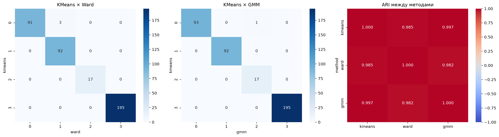
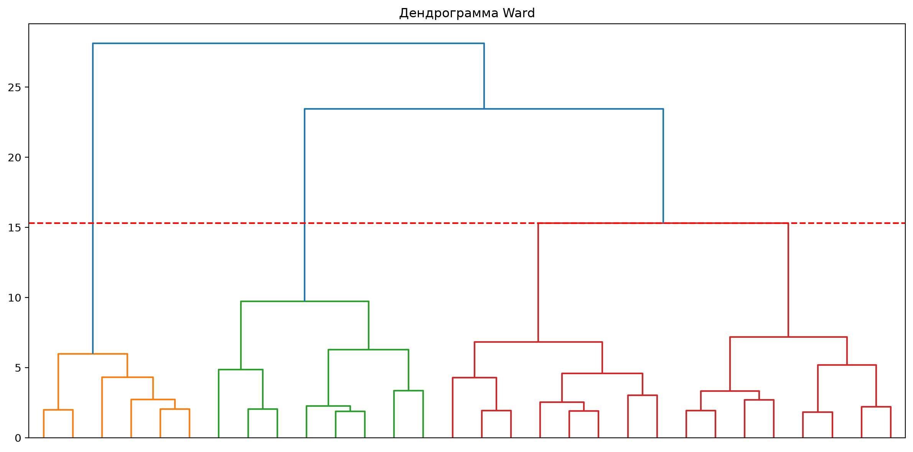
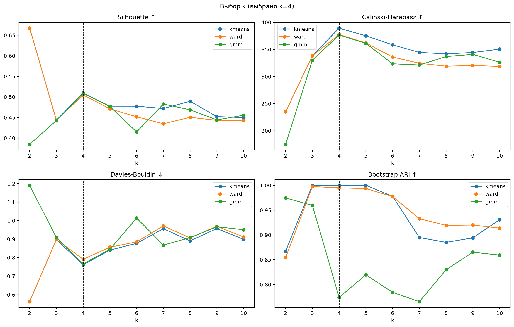
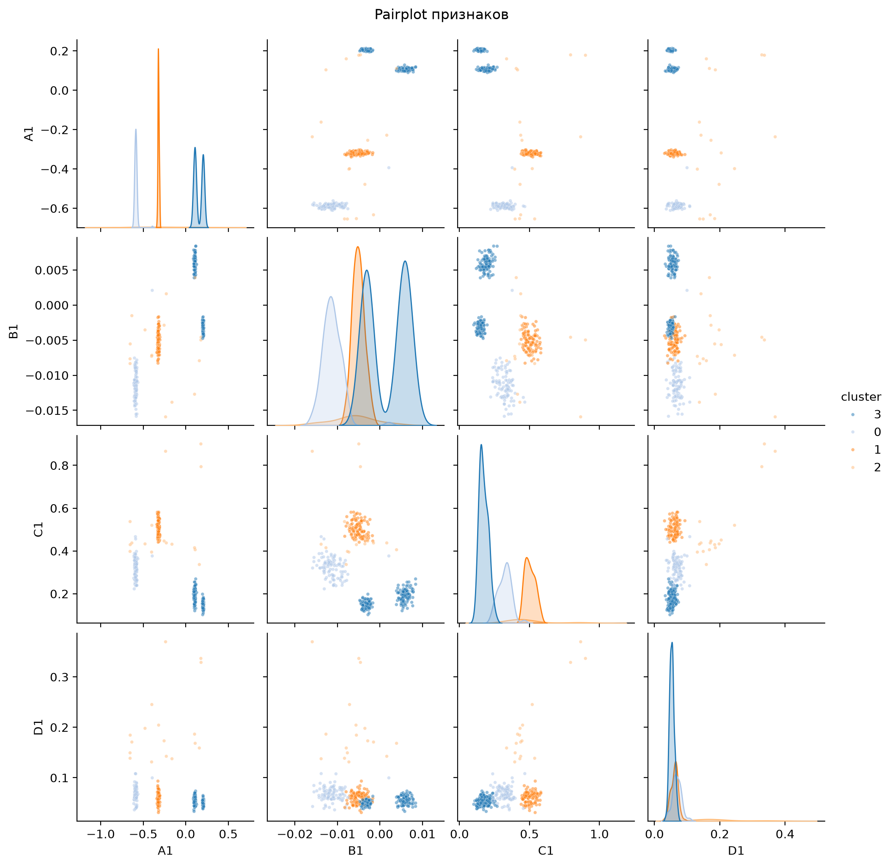
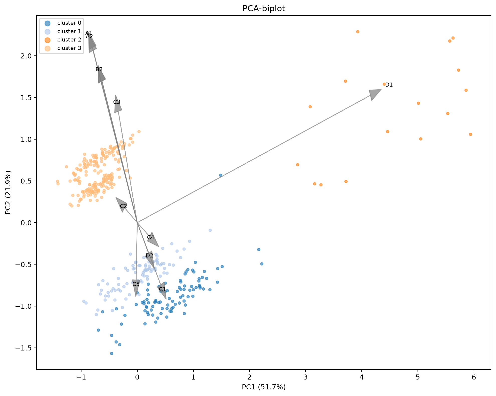
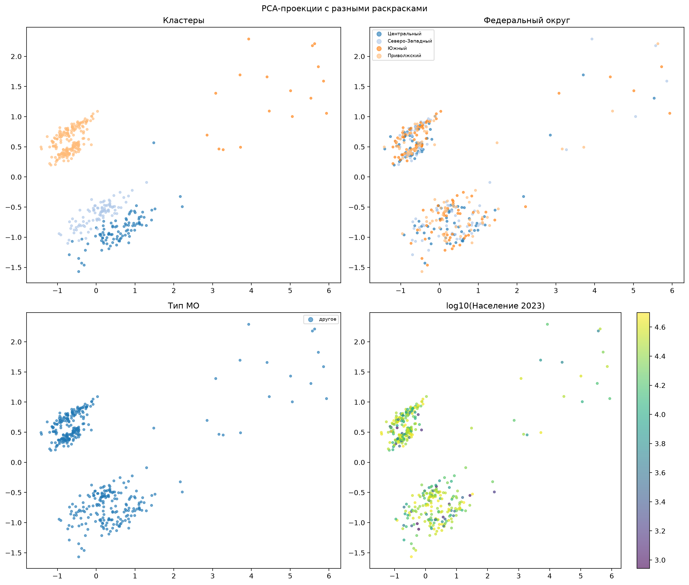
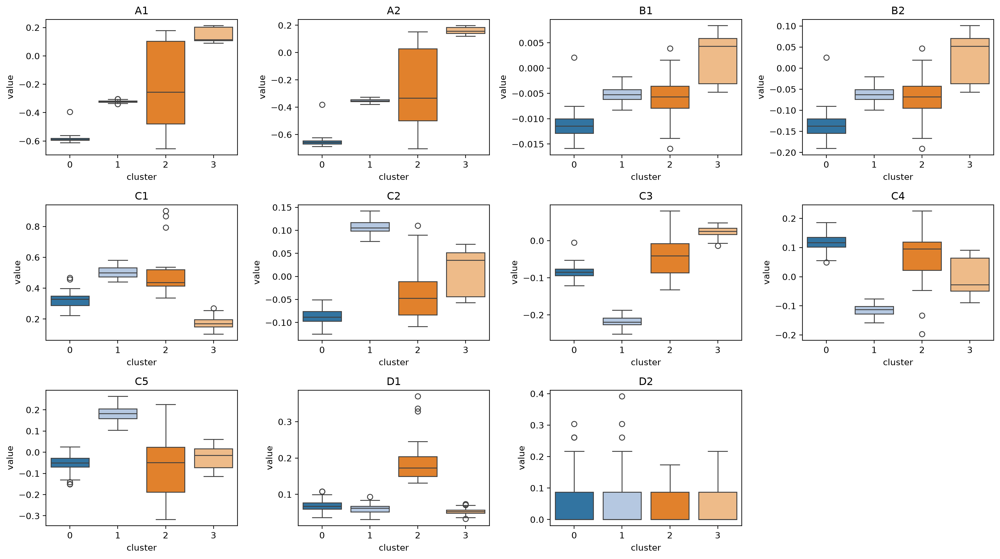
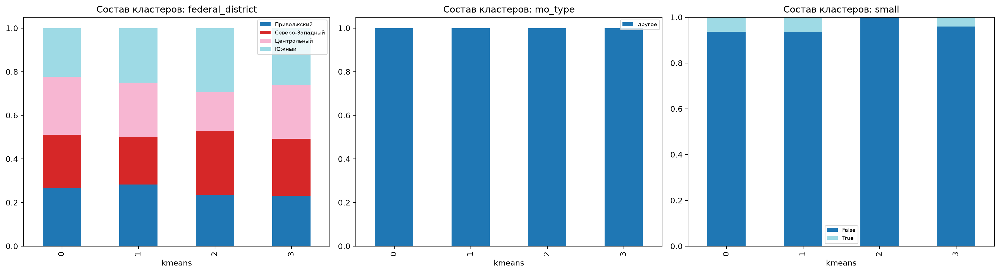
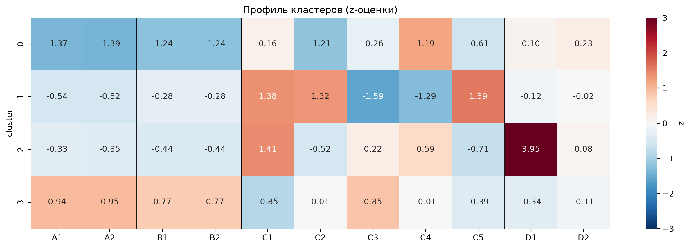
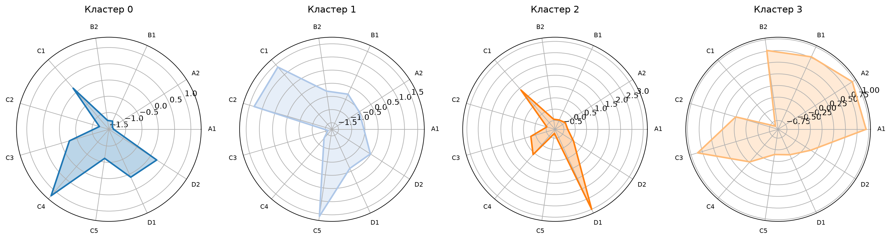
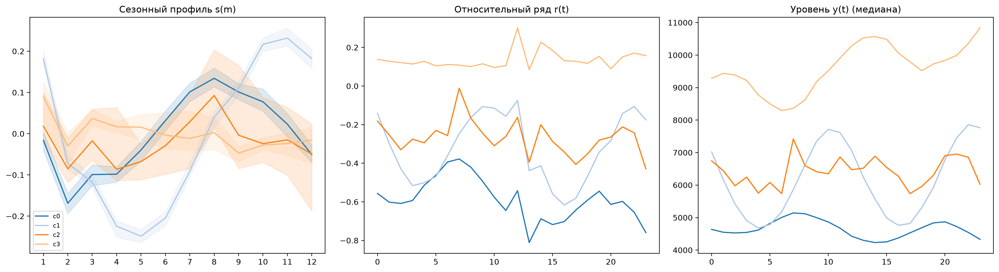
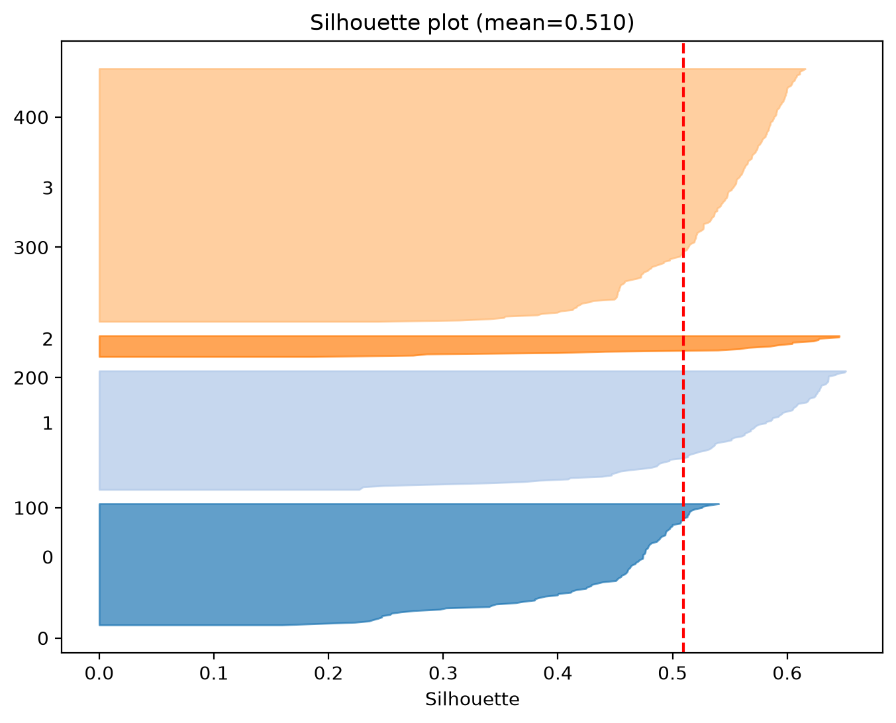
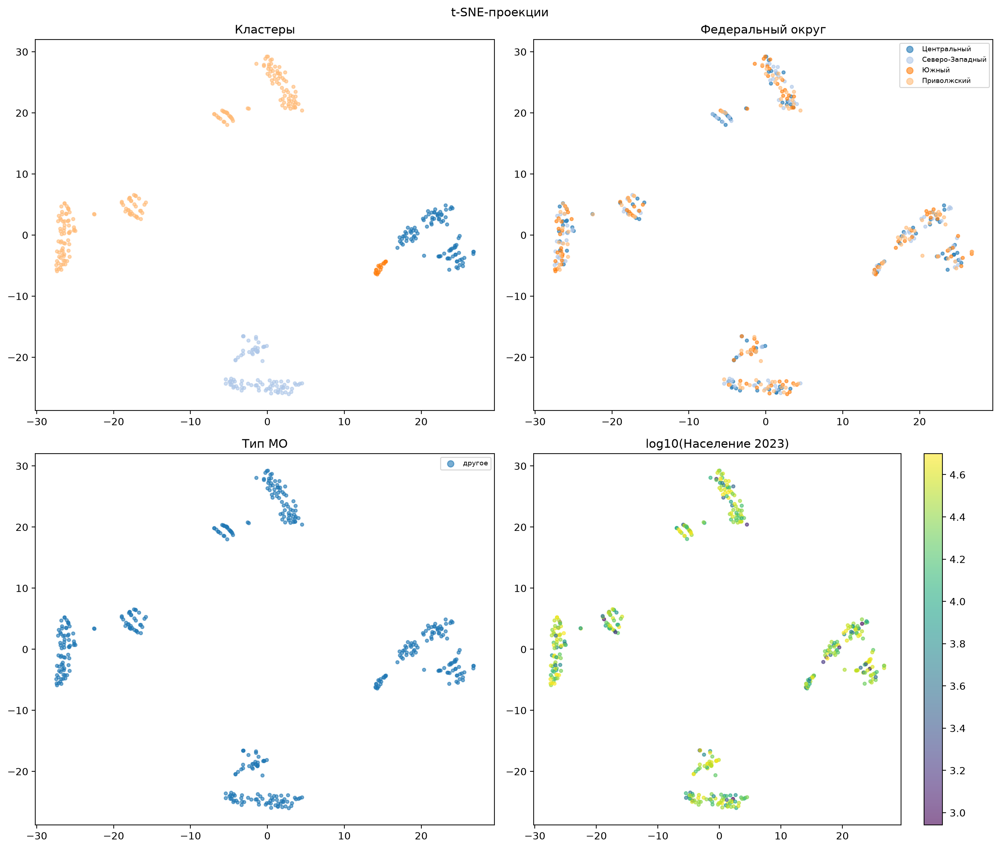